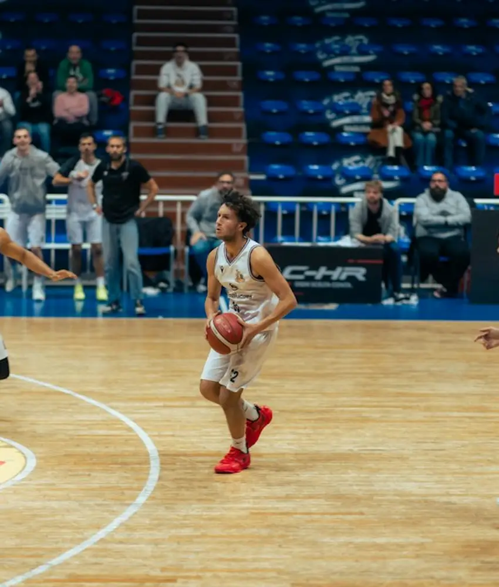

Northside FC vs City Rovers
Spring Community League · Group A
Match center
Plan the season, run the matchday, and follow every score in one calm view built for organizers, teams, officials, and supporters.
The next seven days
See the pulse of the competition at a glance, then drill into the details that keep each team moving.
Spring Community League · Group A
Spring Community League · Group B
Junior Playmakers · Round 04
Sunday Social League · Round 07
City Rovers vs Northside FC
Four sequential 90-minute slots with a 45-minute turnaround built in.

Lanes, marshals, and running orders published to every parent and coach.

Referees, timekeepers, and scorers confirmed and notified automatically.
Live match center
Follow the action without losing the feeling. Scores stay clear, updates stay timely, and the important moments stay visible.
Spring Community League · 2nd half · minute 68
Spring Community League · 4th quarter · minute 42
Junior Playmakers · Final result · 4 events
Standings & momentum
Give players and supporters the context behind the score. The table updates as the game unfolds.
| Pos | Team | Played | W | D | L | Points | Form |
|---|---|---|---|---|---|---|---|
| 01 | Northside FC | 08 | 07 | 01 | 00 | 22 | |
| 02 | Harbor United | 08 | 06 | 01 | 01 | 19 | |
| 03 | City Rovers | 08 | 05 | 02 | 01 | 17 | |
| 04 | Eastvale FC | 08 | 04 | 01 | 03 | 13 |
Swipe the table to see every column
One glance, every zone
Avoid clashes before they happen. Stackly surfaces conflicts, confirms availability, and gives every person the context they need.
6 matches · 2 venues · all confirmed
4 matches · East Fieldhouse · 3 confirmed
Finals day · Harbor stadium · 8,000 seats
A score center that speaks human

Officials can update scores, events, and match notes from any device without a complicated back office.
Simple progress signals help fans understand the game while keeping the interface calm and readable.

Export-friendly summaries keep organizers, teams, and supporters aligned long after the final whistle.